SpringValidation使用指南--Controller与Service入参校验
由于近期需要对公司项目中现有的一些Controller和Service方法入参做校验，于是专门去学习了一下HibernateValidator，由于对Spring和Hibernate的校验技术背景不太了解，很多地方简直看的一脸懵，但这两天看了几篇质量极高的博客后，对Spring这一套Validation技术稍微有了点了解，理清了它们之间的关系，最近这几天会慢慢把这篇文章完善起来。
JSR-303、Hibernate Validator与Spring Validation之间的关系
做SpingBoot程序时，我们经常需要进行方法参数校验，相信很多人都用过@Valid注解以及@NotNull、@NotEmpty、@Min、@Max这样的注解，这些注解实际上是Java标准JSR-303定义的，而且JDK本身不提供这些参数校验的实现。
Hibernate为JSR-303提供了一套实现，并在原先的基础上又扩展了一些功能，即Hibernate Validator，它可以单独引入使用，比如这样。
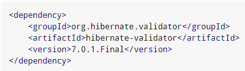
Spring的不少模块都集成了Hibernate Validator，所以现在的主流的开发环境一般都是通过Spring或者Spring Boot的起步依赖将其引入的,比如spring-boot-starter-validation，其内部就包含了Hibernate Validator。在Hibernate的基础上，Spring Validation又提供了一系列AOP支持，使各种自定义的Validator以及校验注解能更方便的整合进我们的Spring程序中。
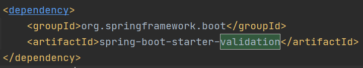
如此，JSR-303、HIbernate Validator以及Spring Validation之间的关系就明朗了。
JSR-303 <– Hibernate Validator实现 <–Spring Validation二次封装
Spring Validation的功能
Request Body校验
大部人最先接触到的一般是Spring MVC的Controller层入参校验，比如下面这个例子。
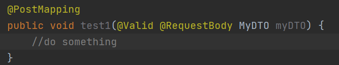
RequestBody绑定了一个DTO（Data Transfer Object）对象，里面的一些字段需要进行校验。
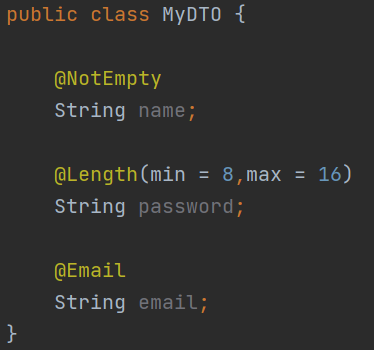
在Controller方法的入参前面加上一个@Valid注解，Spring Validation就会自动校验DTO中的数据，若一个或多个字段没通过校验，那么就会抛出MethodArgumentNotValidException。
这里的Valid注解是JSR-303定义的，可以替换为@Validated注解，它是SpringValidation提供的，虽然两者功能不同，但在这个场景下，它们作用是一样的。
稍微复杂有点的情况是，如果DTO中又包含了另一个需要校验的复杂对象，比如下面这个例子。
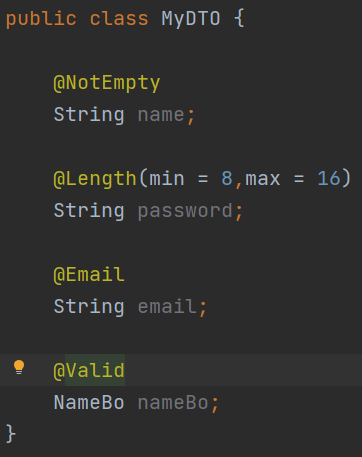
假设NameBo里也有一些需要校验的字段，那么应该在NameBo字段上再加一个@Valid注解，当Spring检测到这个NameBo字段时，会递归进行校验，可以看看@Valid注解的源码。
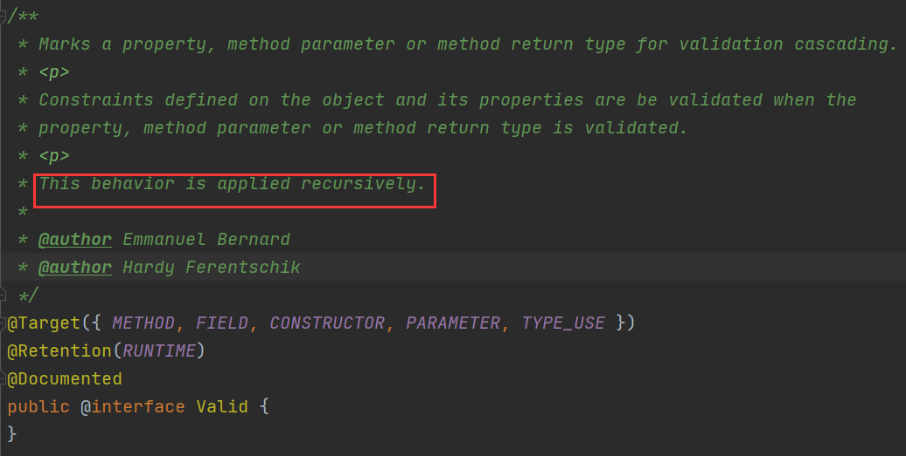
源码的注释已经说明了，这种校验行为会递归进行。
方法入参校验
有时候我们希望不只是在Controller层进行校验，而是在各种各样的地方应用校验，比如Service层，也希望能对平铺开来的参数进行校验，而不单纯的是对DTO进行校验，比如下面这样。
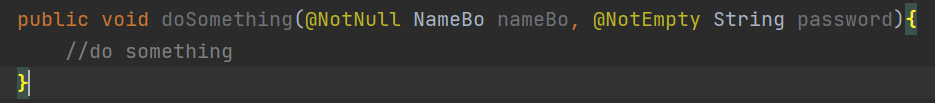
但与Controller层的情况稍微不同了，在非Controller类中想要让Spring自动校验，需要在类定义加上一个@Validated注解。
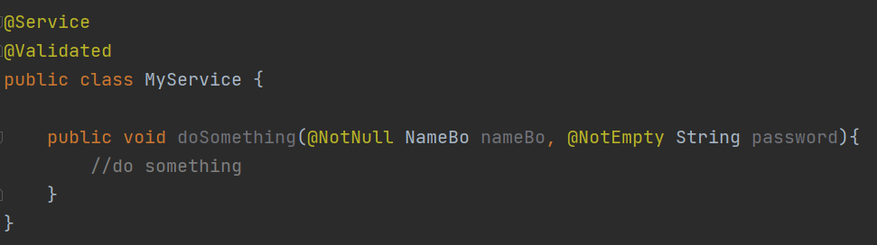
如此一来，MyService类中的所有方法，一旦入参上加了校验注解，都会被SpringValidation处理，如果有参数没通过校验，抛出的是ConstraintViolationException，与前面提到的MethodArgumentNotValidException不同，ConstraintViolationException是JSR-303提供的，而它是Spring提供的。
如果想要对Controller内的入参（不是RequestBody）进行校验，也需要在Controller类上加@Validated注解，比如下面这个例子，是对PathVariable和RequestParam进行校验。
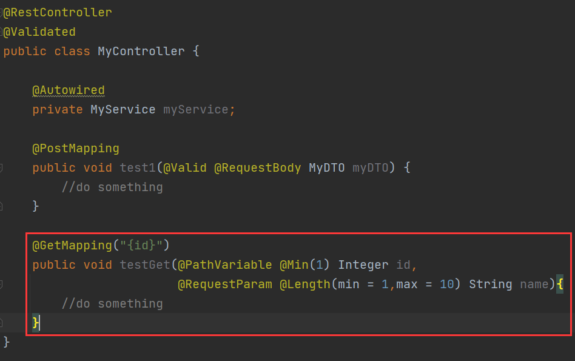
如果想要在Service层对DTO内的字段进行校验，在Service类上已经使用了@Validated注解的前提下，只需要在DTO入参的前面加上@Valid注解即可。
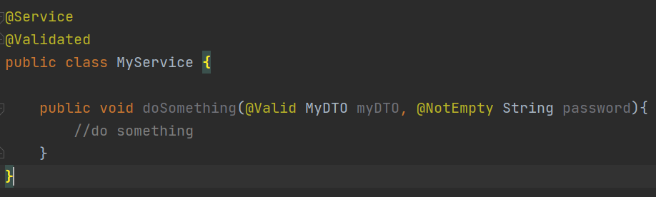
自定义校验规则
定义Validator
相信你已经发现了，JSR-303这一套校验规范实际上是围绕注解展开的，比如@NotNull、@NotEmpty这些，针对这些JSR-303已有的注解，SpringValidation或者HibernateValidator实现了一部分，但如果现在有一个自定义的DTO类，需要同时检查多个字段，比如下面这个类。
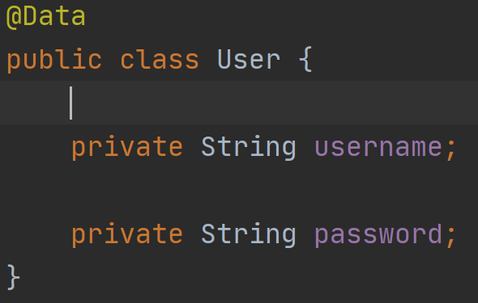
按照User类的定义，对其进行校验时需要同时检查username和password，单检查一个username或者单检查一个password都是没有意义的，此时预设的注解就无法满足我们的需求了，我们自己手动写一套校验规则。
首先写自定义类型的校验器，实现ConstraintValidator接口，第一个泛型是我们自定义的校验注解，后面会讲到，第二个泛型是我们要校验的类型，这里我们要同时检查username和password，所以直接检查整个User对象。
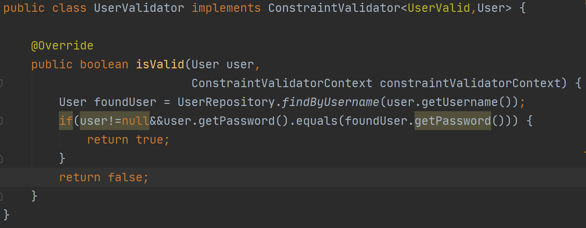
一般来说重写isValid方法即可，校验时调用的是这个方法,如果isValid返回true，则说明校验通过，程序正常运行，若返回false，则校验不通过，触发ConstraintViolationException。
自定义校验注解
有了Validator还不够，因为此时Spring的校验代理还不知道应该对User执行UserValidator的校验方法，为了让Spring去自动校验User，我们要写一个自定义注解标注在User类上，就像给一个产品打上标签，指明它该使用哪种机器处理。
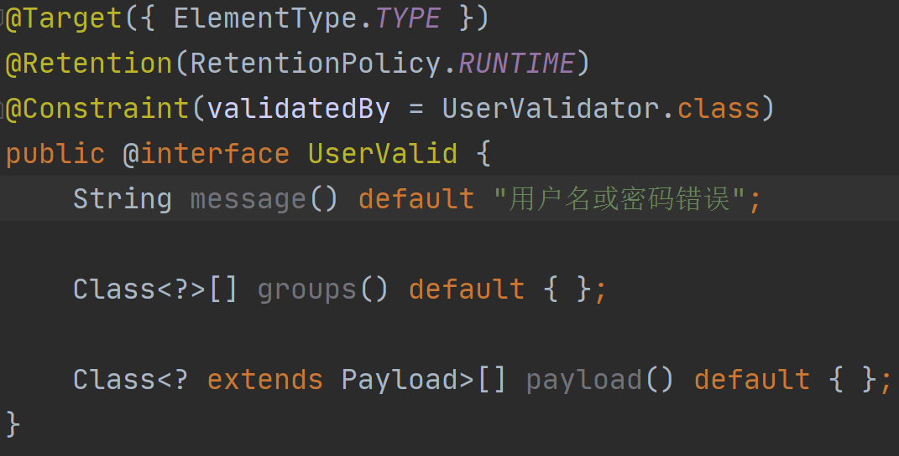
由于要校验的是整个User类，所以@Target指定的是TYPE，@Constraint(validatedBy=UserValidator.class)则代表这个注解所标注的类应该被UserVlidator校验。
message方法有一个默认返回值，这里指定未通过校验时的message；groups方法是用于分组校验的，分组是什么概念？你可以理解为类似于Spring Profile的一种东西，指明了哪个分组下应该检查User，哪些分组下不应该检查User，具体的会在后续文章中说明，这里不展开。
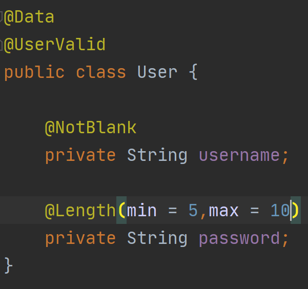
最后将UserValid注解标注在User类上，如上图所示，在Controller层或者Service层使用Valid注解做DTO校验的标注。
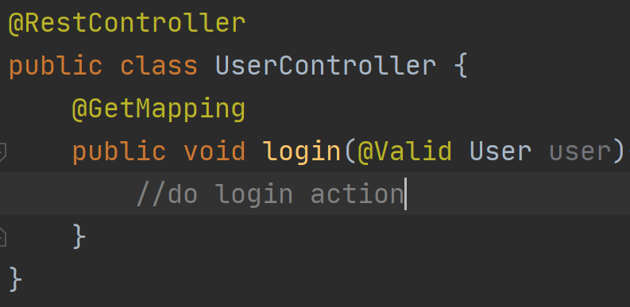
总结
本文介绍了SpringValidation与JSR-303、HibernateValidator的关系，并简单的对其使用进行了说明，但SpringValidation的功能实际上还不止如此，比如手动调用Validator、分组校验等等，后续文章会补全这些内容。